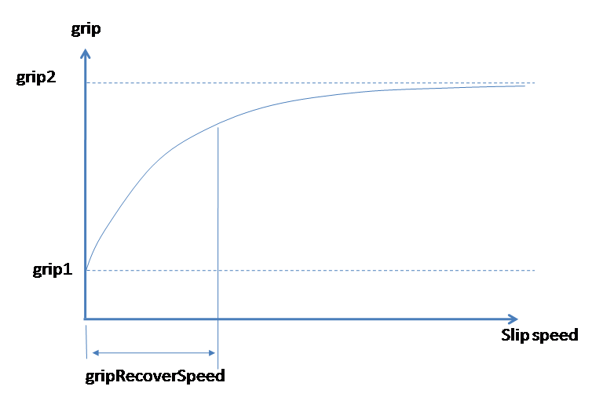
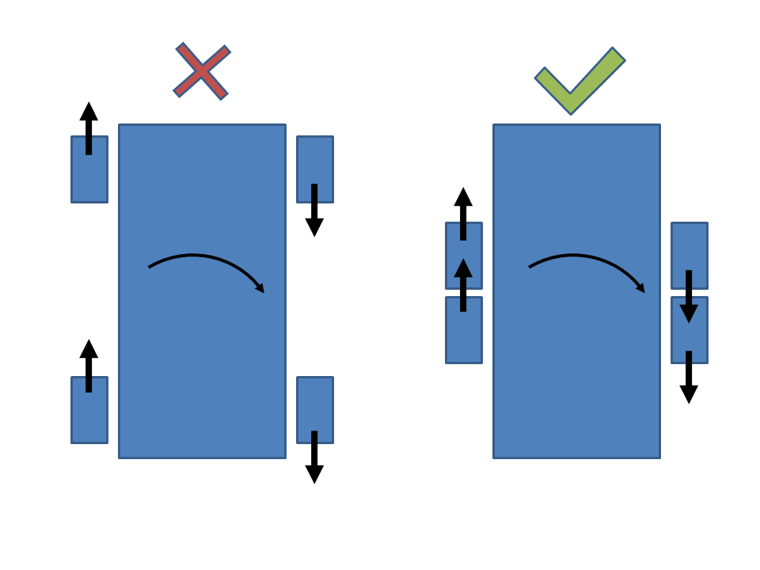

Related: Vehicle definitions file in the SDK package: Scripts.pak\Scripts\Entities\Vehicles\def_vehicle.xml
Handling Guide
| Parameter | Description |
|---|---|
| v0SteerMax | Maximum steering angle at zero speed. |
| kvSteerMax | Amount to reduce the steering by. |
| vMaxSteerMax | At this speed the steering is fully reduced. |
| steerSpeed | Steering speed at max speed. |
| steerSpeedMin | Steering speed at zero velocity. |
| steerRelaxation | Steering speed when returning to neutral steering position. |
Handling Guide
ArcadedWheeled provides a different handling system from the default StdWheeled.
There are various differences, but crucially all the handling physics is done in the game code rather than in the low level physics code.
Specifically the friction values, power, pedal, and brake are set to zero for the low level physics code and only the suspension springs and collisions are processed by the low level.
The actual handling, such as speed, acceleration, lateral friction and hand braking, are instead done by the game code.
Common Setup
Most setup features such as damage, components, parts and actions are the same as previous. The only differences concern the friction, tweak modifiers, the gears and engine power.
Suspension
The suspension stiffness and damping uses the same setup as previous.
<Part name="wheel_1" class="SubPartWheel" component="wheel1" mass="80">
<SubPartWheel
lenMax="0.4" // These are used
stiffness="0"
suspLength="0.15"
damping="-0.40000001"
axle="0"
canBrake="0" // These values are not used
density="100"
driving="1"
maxFriction="1"
minFriction="1"
slipFrictionMod="0.30000001"
rimRadius="0.31999999"
torqueScale="1.1"
/>
</Part>
However, the values canBrake, density, driving, maxFriction, ninFriction, slipFrictionMod, rimRadius, and torqueScale are no longer used since these were used by the low level code.
In fact the friction values are zeroed by the game code. The stabilizer value is still available in the <Wheeled> node.
Mass Box
The mass box is specified in the same way as previous using the <MassBox> node. However, it now only influences the suspension and not so much the handling anymore.
For example, actual mass of the box does not change the acceleration of the vehicle. This is intentional, since speed and acceleration are specified in a mass-independent way.
Handling
XML Node
In the xml the <StdWheeled> node is replaced with the node <ArcadeWheeled>, which lives underneath <MovementParams>.
<MovementParams>
<ArcadeWheeled vMaxSteerMax="22" steerSpeed="90" steerSpeedMin="110" v0SteerMax="40" kvSteerMax="27"
steerRelaxation="110" pedalLimitMax="0.0" rpmInterpSpeed="4" rpmRelaxSpeed="2" rpmGearShiftSpeed="2" engineIgnitionTime="0.0" >
<Handling>
<Power acceleration="14" decceleration="2" topSpeed="22" reverseSpeed="6" />
<HandBrake deccelerationPowerLock="2" decceleration="10.1" lockFront="0" lockBack="1" ... />
<Friction back="3.0" front="2.2" offset="-1.3"/>
<Correction lateralSpring="0" angSpring="2"/>
<SpeedReduction reductionAmount="0.2" reductionRate="0.2"/>
<Compression frictionBoost="1.5f" frictionBoostHandBrake="1.5f" />
<Inertia radius="4"/>
</Handling>
<Wheeled axleFriction="0" axleFrictionMax="0" brakeTorque="0" ... />
<gearRatios>
<gearRatio value="-15"/>
<gearRatio value="0"/>
<gearRatio value="15"/>
</gearRatios>
</Wheeled>
<SoundParams ... />
<TweakGroups> ... </TweakGroups>
<AirDamp dampAngle="0.2,0.2,0" dampAngVel="8, 2, 0"/>
</ArcadeWheeled>
</MovementParams>
<ArcadeWheeled> has pretty much the same format as the default <StdWheeled>, however, some options are no longer used or available (explained later).
The Node
</ArcadeWheeled>
...
<Handling>
<Power acceleration="14" decceleration="2" topSpeed="22" reverseSpeed="6" />
<HandBrake deccelerationPowerLock="2" decceleration="10.1" lockFront="0" lockBack="1" frontFrictionScale="3.2" backFrictionScale="0.10" angCorrectionScale="6.0" />
<Friction back="3.0" front="2.2" offset="-1.3"/>
<WheelSpin grip1="0.7" grip2="1.0" gripRecoverSpeed="2" accelMultiplier1="2.2" accelMultiplier2="0.5" />
<Correction lateralSpring="0" angSpring="2"/>
<SpeedReduction reductionAmount="0.2" reductionRate="0.2"/>
<Compression frictionBoost="1.5f" frictionBoostHandBrake="1.5f" />
<Inertia radius="4"/>
</Handling>
...
</ArcadeWheeled>
The <Handling> node encapsulates all the pertinent handling features of the vehicle. The handling description is now specified in the <handling> node in a simplified way for the front wheels and the back wheels.
There are no gears and no engine specification. Also, everything is mass independent, acceleration and decceleration rates, and braking etc are not affected if you change the mass box.
- <Power>
- acceleration - This is the rate of acceleration.
- decceleration - This is the rate of natural deceleration when there is no throttle or brake.
- topSpeed - Top speed in meters per second.
- reverseSpeed - Reverse speed in meters per second.
- <Friction>
- front - The lateral friction of the front wheels (note the forwards friction is internally calculated).
- back - The lateral friction of the back wheels.
- offset - The vertical positional offset, where handling forces are applied for forwards and lateral friction relative to the mass box.
Friction Offset - The handling forces are not actually applied at the wheel positions. The vertical offset from the mass boss is overridden using this value. So if you move the mass box up or down the handling will stay roughly the same. Making this value zero, will apply frictional forces at the same height as the mass box. This will give you handling that doesn't tip the vehicle side to side. Generally, this position wants to be negative. The more negative this value the more tipping both side to side and forwards when braking.
- <Correction>
- lateralSpring - Lateral damping value.
- angSpring - Angular correction value.
Angular and Lateral Correction - The angular value makes the vehicle corner like it was on rails. It calculates the ideal turning circle set by the steering and corrects the angular speed to keep the vehicle steering on that circle. The lateral value controls how much side sliding is allowed. A high value will stop the vehicle from sliding laterally. The vehicle can be made to steer using these values alone. For example, you could turn friction to zero on the front and back wheels and set these values to be high (+30). The vehicle will then corner in a arcade fashion.
- <WheelSpin>
- Overview - The forward friction value of the wheels is auto calculated from the acceleration specified in the <Power> node. When accelerating the change in wheel speed is just enough to power the vehicle by the specified amount, without the wheels slipping. To make the wheels slip use the following modifiers.
- accelMultiplier1 - Scale the acceleration by this at low speed (2.0 is a good number).
- accelMultiplier2 - Scale the acceleration by this at top speed. This value should be low, i.e. 0.5, since you don't normally want wheel slipping and the acceleration should drop off.
- grip1 - Scale the default friction by this amount when the wheel is not slipping.
- grip2 - Scale the default friction by this amount when the wheel has a high slip speed. Usually you should set this to 1.0.
If you always want the wheel to slip make it less than 1.0.
If you want the wheel to have more friction that the default make this larger than 1.0 (though you may not notice much difference here) - gripRecoverSpeed - See WheelSlip section.
- <HandBrake>
- lockFront - Should the front wheels lock.
- lockBack - Should the back wheels lock.
- deccleration - How much deceleration should the full hand brake provide.
- deccelerationPowerLock - How much deceleration should the hand brake provide when the accelerator is also still pressed.
- frontFrictionScale - How much to scale the lateral friction by, of the front wheels, when the hand brake is pressed.
- backFrictionScale - How much to scale the lateral friction by, of the back wheels, when the hand brake is pressed.
- angCorrectionScale - How much to scale the angSpring value by when the hand brake is pressed.
- latCorrectionScale - How much to scale the lateralSpring value by when the hand brake is pressed.
- <SpeedReduction>
- reductionAmount - Reduce the top speed, fractionally, by this amount when steering is at steer max.
- reductionRate - The rate at which to reduce the speed by.
- <Compression>
- frictionBoost - Increase friction when suspension becomes compressed.
- frictionBoostHandBrake - Same as above for but when hand brake is pressed.
Compression frictionBoost - In a real car the amount of friction force depends on the downwards load on the tyre. If the suspension is compressed friction increases. If the chassis is traveling upwards (i.e. going over bumpy terrain), then the suspension expands and the load decreases along with the friction. This value controls how much the suspension effects the friction. Setting this value to zero will leave friction unaffected. Sensible values 0 - 5. This value only allows for increasing friction. The friction value will not decrease when the suspension is expanded.
- <Inertia>
- radius - The effect radius of the chassis.
Inertia radius - The game code treats the chassis as a physics sphere. This radius affects how the vehicle rotates dues to handling forces. The larger this value the more "trunk" like and heavy the vehicle will feel.
Steering
The steering is specified as per <StdWheeled> using vMaxSteerMax etc.
<ArcadeWheeled vMaxSteerMax="22" steerSpeed="90" steerSpeedMin="110" v0SteerMax="40" kvSteerMax="27"
steerRelaxation="110" pedalLimitMax="0.0" rpmInterpSpeed="4" rpmRelaxSpeed="2" rpmGearShiftSpeed="2" engineIgnitionTime="0.0" >
| Parameter | Description |
|---|---|
| v0SteerMax | The maximum steering angle at zero speed. |
| kvSteerMax | The amount of steering degrees subtracted from v0SteerMax when speed is equal or higher than vMaxSteerMax. |
| vMaxSteerMax | The top speed as far as steering is concerned. |
| steerSpeed | The speed at which the wheels reach full turning lock at max speed. |
| steerSpeedMin | The speed at which the wheels reach full turning lock at zero speed. |
| steerRelaxation | The speed at which the wheels center when you are turning then let go of the stick. |
Caveats
- The Tweak Groups are not implemented. These used to influence the low level physics parameters such as power, which are not used.
- Gears are not used by <ArcadeWheeled>. From experience it was felt that gears just got in the way of the desired handling. The aim is to fake gears for sound purposes only.
- Similarly nearly all the low level physics params underneath <Wheeled> including <gearRatios> are currently ignored. Though at the moment the init code still parses these (will git rid of this at some point).
- Note, however, that the stabilizer value for the suspension is the still used from the <Wheeled> node.
<Wheeled axleFriction="0" axleFrictionMax="0" brakeTorque="0" stabilizer="0.5" ... />
<gearRatios>
<gearRatio value="-15"/> // These don't affect the handling for <ArcadeWheeled>
<gearRatio value="0"/>
<gearRatio value="15"/>
</gearRatios>
</Wheeled>
WheelSlip
For real tires the actual friction value is a complex function of slip ratio and others parameters. But this is complex to set up and hard to understand, and tweak.
Instead to achieve wheel spins a simple, but hacky, method is used, but works quite well. We simply change the grip based on slip speed. With grip1 being the smallest and grip2 being the highest.
The grip is exponential with an exponential constant of gripRecoverSpeed, as shown. When the wheels aren't slipping the grip is reduced and they will begin to slip. Once slipping at a high speed they recover grip.
The result is the grip oscillates between high and low. At constant speed the slip speed naturally reduces to a small value. The larger the value of gripRecoverSpeed, more the wheel slip before recovering grip

Handling Guide
The tank handling has been rewritten using the arcadewheeled handling. All of the settings from the arcadewheeled are present.
The difference is the tank doesn't turn the front wheels and has different wheel speeds on the left track and the right track.
In order to make the tank turn on the spot a trick is used. The wheels are artificially pulled towards each other in code. This means that lateral friction isn't stopping the tank from turning.

<TankHandling
additionalSteeringStationary="5.5" // Difference in wheel speed when turning on the spot.
additionalSteeringAtMaxSpeed="4.0" // Difference in wheel speed when turning at full speed.
additionalTilt="7" /> // Force the tank to tilt left and right, don't make this number too big!In order to stop the wheels from spinning and give the tank more forwards/backwards grip, make the values in grip1 and grip2 the same and greater than 1.
<WheelSpin grip1="2" grip2="2" gripRecoverSpeed="4" accelMultiplier1="1.0" accelMultiplier2="1.0"/>
Since tanks should be traveling fast and turning at the same time you can reduce the top speed whilst turning, for example
<SpeedReduction reductionAmount="0.4" reductionRate="1.0"/>
Note: The Correction parameters also work for the tank. Increasing lateralSpring will stop the tank sliding left and right.